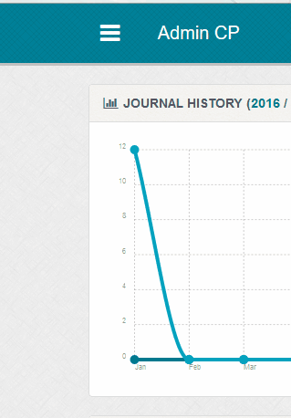
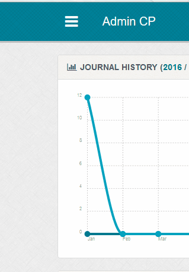
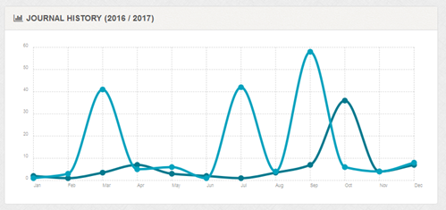
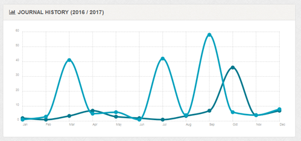
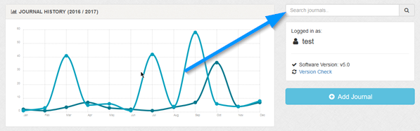
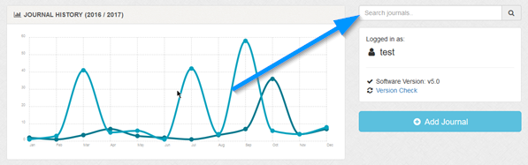
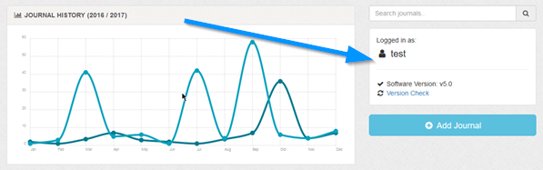
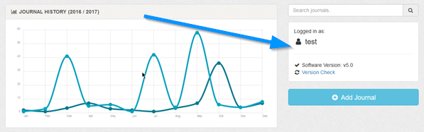
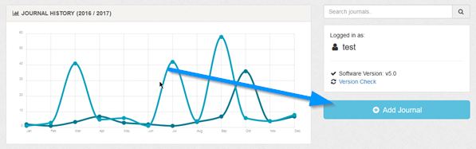
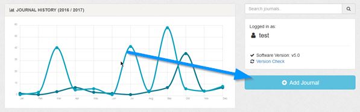

Admin Homepage
Overview
Main screen displayed after login. If you have other staff, you can set a custom dashboard to load if you need to. More info below.
Navigational Menu
Maian Weblog utilises an off canvas menu for all devices. This has the benefit of being cross platform compatible as well as saving
on screen space. To show the menu, click the icon top left. Click anywhere off the menu to close.

The menu state is saved when clicking headings, so a page refresh won`t change the currently selected area.

The menu state is saved when clicking headings, so a page refresh won`t change the currently selected area.
Journal History
Graphical display of total journals created for the current year and the previous year.

Disabled journals are also calculated as they are active in the database whether they are active in your journal or not.

Disabled journals are also calculated as they are active in the database whether they are active in your journal or not.
Search Journals
Quick search box to search journals. Searches title and comments. Same as search box on Journal manage page.


Logged in As / Software Version / Version Check
Shows current logged in user and software version. Version check and software version are NOT shown to restricted staff members.

IMPORTANT. The version check does NOT send any personal or server information to the MSWorld servers. Only the version number is sent. It is totally anonymous and nothing is logged. The check also happens over SSL. If you prefer not to have this shown, set the 'ENABLE_VERSION_CHECK' constant to 0 in the 'admin/control/userdef.php' file.

IMPORTANT. The version check does NOT send any personal or server information to the MSWorld servers. Only the version number is sent. It is totally anonymous and nothing is logged. The check also happens over SSL. If you prefer not to have this shown, set the 'ENABLE_VERSION_CHECK' constant to 0 in the 'admin/control/userdef.php' file.
Add Journal
Quick link to add new journal.


Last XX Journals
Shows the last XX journals, where XX is the value set in the 'LATEST_DASHBOARD_JOURNALS' constant in the 'admin/control/userdef.php' file. Change
if you want a higher value. If a staff member has access only to his/her journals, journals by other staff are not shown.
For journal date / icon explanations, see the main manage page. Note that journals cannot be deleted on the dashboard.
For journal date / icon explanations, see the main manage page. Note that journals cannot be deleted on the dashboard.
Custom Staff Dashboard
If you prefer, you can load custom dashboards for different staff members. This might be useful if you want specific info shown only to a certain
staff member. To accomplish this, you need to do the following:
1 Make a copy of the 'admin/templates/dashboard.php' file and save in the 'admin/templates/' directory.
2 Rename the file as follows, appending the staff ID number to the file. dashboard-12.php
To get the staff ID number, view the staff manage screen.

So, if the ID was 3, the file should be dashboard-3.php. Repeat for staff you want to have custom dashboard.
1 Make a copy of the 'admin/templates/dashboard.php' file and save in the 'admin/templates/' directory.
2 Rename the file as follows, appending the staff ID number to the file. dashboard-12.php
To get the staff ID number, view the staff manage screen.
So, if the ID was 3, the file should be dashboard-3.php. Repeat for staff you want to have custom dashboard.